>> Lisboa - Cadiz 19-26 wrzesieñ 2015 <<
ATLANTYK 2015 - mieliœmy wystartowaæ 19.09.2015 z Lizbony z mariny Alcantara, ale nasza
XVIII wieczna replika brygu La Grace
z mariny Alcantara, ale nasza
XVIII wieczna replika brygu La Grace ze wzgledu na sztormow¹ pogodê zdo³a³a dop³yn¹æ do Cascais w Zatoce Lizboñskiej.
Plan trasy naszego rejsu od samego pocz¹tku uleg³ zmianie i zamiast do Sines - rodzinngo miasta Dom Vasco da Gamy, pop³ynêliœmy do Setubal, a dopiero potem do Sines. Cabo de Sao Vincente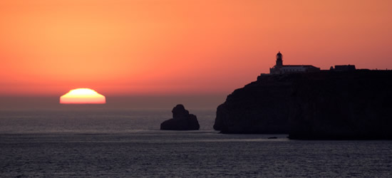 - Szko³a ¯eglarska Henryka IV ¯eglarza ,
Lagos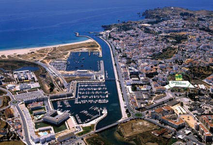 - pierwszy i najwiekszy rynek niewolników w Europie, Portimao, Faro - kotwicowisko na rozlewiskach tu¿ pod lotniskiem.
Wszystko na przepiêknych klifach,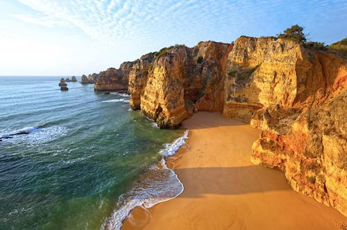 plazach i jaskiniach Algarve (j. Benagil)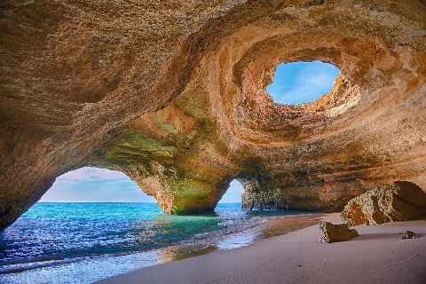
ci¹gn¹ce sie od Cabo de Sao Vincente do okoliæ Faro.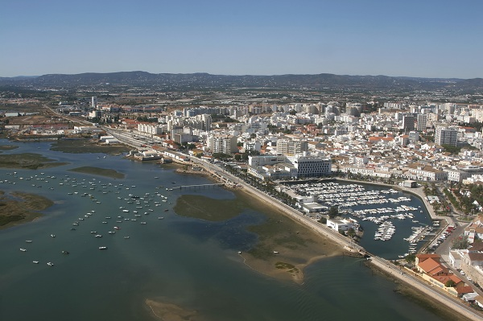 I ostatni etap przeskok do Kadyksu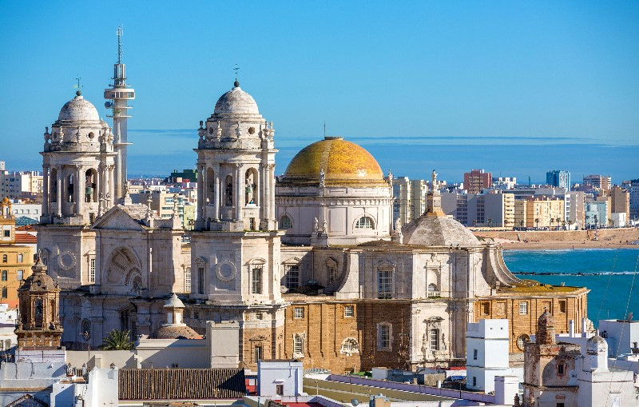
ze wzgledu na sztormow¹ pogodê zdo³a³a dop³yn¹æ do Cascais w Zatoce Lizboñskiej.
Plan trasy naszego rejsu od samego pocz¹tku uleg³ zmianie i zamiast do Sines - rodzinngo miasta Dom Vasco da Gamy, pop³ynêliœmy do Setubal, a dopiero potem do Sines. Cabo de Sao Vincente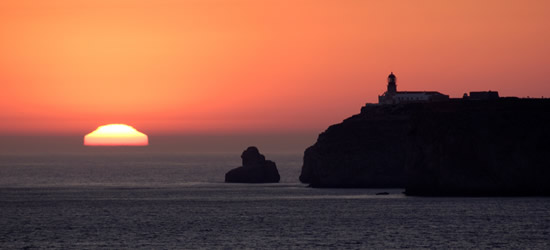 - Szko³a ¯eglarska Henryka IV ¯eglarza ,
Lagos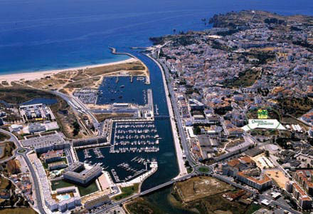 - pierwszy i najwiekszy rynek niewolników w Europie, Portimao, Faro - kotwicowisko na rozlewiskach tu¿ pod lotniskiem.
Wszystko na przepiêknych klifach,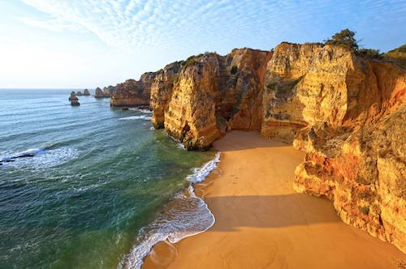 plazach i jaskiniach Algarve (j. Benagil)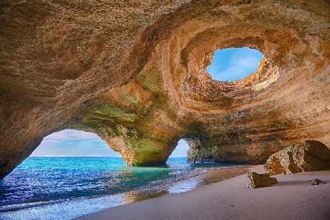
ci¹gn¹ce sie od Cabo de Sao Vincente do okoliæ Faro.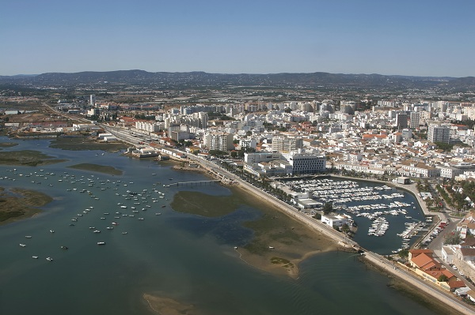 I ostatni etap przeskok do Kadyksu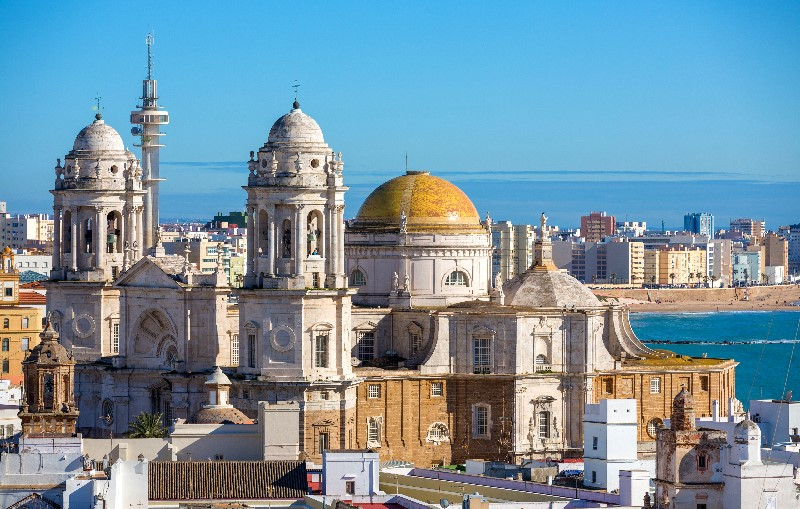